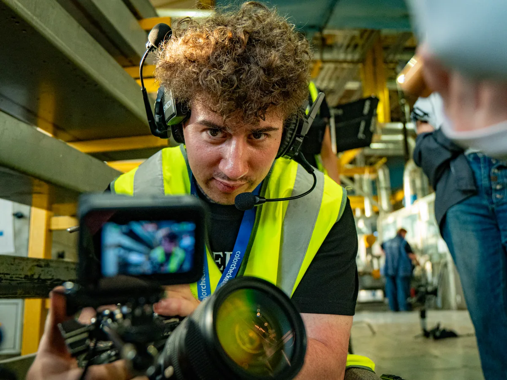

Индивидуальные занятия по видеосъёмке, свету, монтажу и цветокоррекции в DaVinci Resolve — без воды и теории ради теории. Разбираем на настоящих проектах: моих и ваших. Онлайн или очно на площадке.

Программа собирается под вашу цель, а не наоборот. Четыре типичных старта — узнаёте себя?
База с нуля: экспозиция, композиция, свет. Своя камера на старте не обязательна — принципы одни, подскажу что купить, когда упрётесь в потолок.
Переход от репортажей к рекламе и клипам: постановочный свет, широкий кадр, работа с log и RAW. То, за что платят другие деньги.
Колористика как отдельное ремесло и доход: скоупы, ноды Resolve, look-дизайн по референсам. От «кручу колёса наугад» к осознанному грейду.
Научу вас или сотрудника снимать и собирать ролики для соцсетей без продакшена на каждый пост: свет, звук, монтаж, конвейер.
Каждая программа собирается под вас: уровень, камера, цели. Ниже — из чего выбираем.
Онлайн с демонстрацией экрана или очно на площадке. Занятие 90 минут, запись остаётся у вас. Для практики даю свой материал — log, RAW, мультикам.
Бесплатно: цель, уровень, техника. Честно скажу, сколько занятий нужно на вашу задачу.
Программа из блоков под цель — без общих лекций и «обязательной программы».
90 минут разбора и практики. Запись остаётся у вас — пересматривайте сколько нужно.
Снимаете и красите между занятиями — разбираем покадрово, без «молодец, сойдёт».
Работы в вашем портфолио, а не конспект. Меряем прогресс кадрами, не часами.
Никаких пересказов чужих уроков: вы работаете с материалом моих коммерческих съёмок — log и RAW с реальных проектов — и со своим собственным. Планка видна в портфолио: посмотрите, к какому кадру идём.
Учу на том, чем снимаю и крашу сам — от кино-камер до нод Resolve.
Интерактивный урок и три разбора с той базой, которую я даю на первых занятиях. Прочитайте до записи — сэкономите и время, и деньги.
Да, база съёмки даётся с нуля: экспозиция, композиция, оптика, движение камеры. Скорость зависит от практики между занятиями — при регулярных домашних съёмках первые осмысленные ролики появляются после 4–6 занятий.
Любая. Начать можно с телефона или простой беззеркалки — принципы экспозиции, света и композиции одинаковые. Когда упрётесь в потолок техники, помогу выбрать камеру под ваши задачи и бюджет.
Монтаж, цветокоррекция и разборы — онлайн с демонстрацией экрана, из любого города. Постановка света и работа на площадке — очно, по договорённости.
Да. Бесплатная версия покрывает монтаж и цветокоррекцию почти целиком — на ней можно пройти всё обучение. Studio понадобится позже, ради шумоподавления и части эффектов.
Отдельного курса с фиксированной программой у меня нет — занятия индивидуальные, от 3 000 ₽ за 90 минут, и собираются под вашу задачу. Цвет с нуля до уверенной работы в Resolve обычно занимает 6–8 занятий, разбор конкретного проекта — одно-два. Записи занятий остаются у вас, а начать можно бесплатно с интерактивных уроков на сайте.
Программа собирается под вашу цель и уровень: вы не смотрите общие лекции, каждое занятие — про ваш материал и ваши ошибки. Запись каждого занятия остаётся у вас.
Конкретный вопрос — например, настроить конвейер Resolve — закрывается за 1–2 занятия. База съёмки или цвета — обычно курс из 8 занятий. Дальше решает практика, а не количество уроков.
Нет. В видеопроизводстве заказчика и работодателя убеждает шоурил, а не корочка, поэтому результат обучения меряется работами в вашем портфолио.